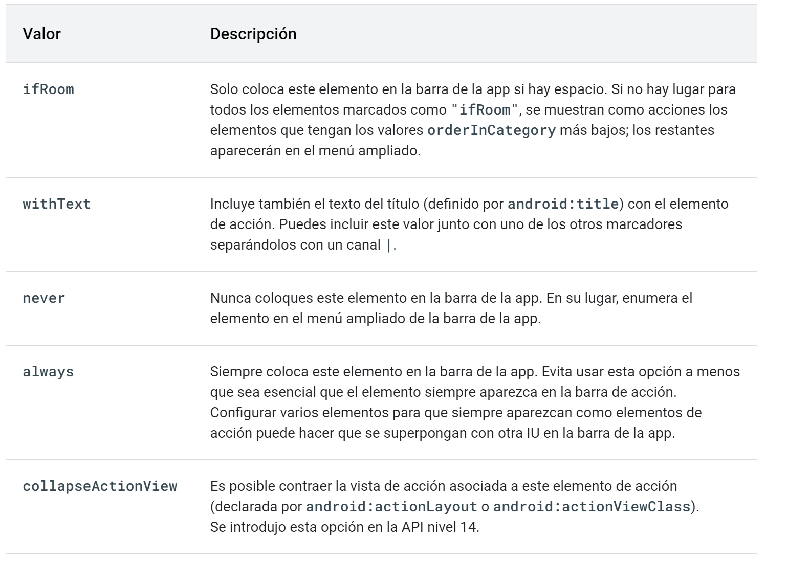

Los menús forman parte, de forma usual, de la interfaz de una aplicación Android, permitiendo añadir funcionalidad sin ocupar mucho espacio en la pantalla. Información menús Material Design.
Hay cuatro tipos de menú en Android:
OverFlow Menu, menú principal que puede ser activado cuando se pulsa sobre el teléfono sobre el botón correspondiente (sea físico o software, dependiendo de su antigüedad) o sobre el icono de la AppBar o ToolBar.
Contextual Menu, son menús que aportan acciones extra para un determinado elemento de la vista. Habitualmente se activan con una pulsación larga sobre el mismo. Podemos encontrar a su vez dos tipos de menús contextuales: Floating Context Menu (abre un menú contextual que se superpone a la actividad) y Contextual Action Mode (abre una barra de aacciones donde se agrupan las acciones a realizar sobre los elementos seleccionados).
Popup Menu, es un menú emergente similar al Overflow Menu, pero que se encuentra vinculado a un elemento de la vista como una forma de ampliar las acciones que se pueden ejecutar.
Navigation Drawer, o menú lateral deslizante, aparece dentro de las guías de diseño como un compnente específico Información adicional Material Design. Suele encontrase en la pantalla principal de la app y contar con un botón para desplegarlo aunque también puede ser abierto deslizando el contenido de la pantalla desde el extremo izquierdo.
La alternativa más sencilla a la hora de definir un menú es dentro de un archivo XML. Podríamos definirlos también programáticamente, pero es bastante más complicado. Los archivos asociados a menús deben guardarse en la carpeta res/menu de nuestro proyecto. Más información
La estructura genérica de un xml asociado a un menú sería algo así:
<?xml version="1.0" encoding="utf-8"?> <menu xmlns:android="http://schemas.android.com/apk/res/android"> <item android:id="@+id/option_1" android:title="@string/option_1" /> <item android:id="@+id/option_2" android:title="@string/option_2" /> ... <group android:id="@+id/group1_1"> <item android:id="@+id/group_op1" android:title="@string/group_op1" /> <item android:id="@+id/group_op2" android:title="@string/group_op2" /> </group> </menu>
📌 Aclaraciones definición de un menú Android:
- Línea 2, el elemento
<menu>es el elemento raíz del documento.- Línea 3, define un elemento del menú (una opción). Puede contener un elemento
<menu>para la definición de un submenú. Los atributos habituales son:android:id,android:iconyandroid:title. Conandroid:showAsActionse indica donde aparecerá esta opción de menú:
- Línea 8, la etiqueta
<group>permite agrupar elementos<item>para poder actuar sobre ellos (mostrar, ocultar conandroid:visibleo bien activar o desactivar conandroid:enabled) de forma conjunta. El atributoandroid:checkableBehaviorpermite que los elementos de este grupo se puedan activar con un botón de selección, sus valores sibles son:single(solo un elemento del grupo s puede seleccionar)all(todos se puden seleccionar) ynone(ninguno es eleccionable).
La ubicación en la pantalla donde aparecen los elementos del menú de opciones depende de la versión para la que desarrollaste la aplicación: para versión Android2.x (nivel API 10) o versiones anteriores el menú aparecerá en la aprte superior de la pantalla cuando el usuario pulse el boón Menú; para Android 3.0 (nivel API 11) y versiones posteriores el Overflow Menu aparece en la barra de la App.
Vamos a desarrollar un Overflow menu con las siguientes opciones:
La primera opción Edit aparece con un icono y debe aparecer fuera del Overflow menu. Las dos siguientes opciones queremos que estén agrupadas, siendo la opción Help un submenú con dos opciones más: App y Android. Finalmente una opción Logout.
Veamos la definición de este menú con ubicción res/menu/menu_overflow.xml:
<?xml version="1.0" encoding="utf-8"?> <menu xmlns:android="http://schemas.android.com/apk/res/android" xmlns:app="http://schemas.android.com/apk/res-auto"> <item android:id="@+id/opEdit" android:title="@string/opEdit" android:icon="@drawable/outline_person_24" app:showAsAction="ifRoom|withText"/> <group android:id="@+id/group_Config"> <item android:id="@+id/opSetting" android:title="@string/opSetting" /> <item android:id="@+id/opHelp" android:title="@string/opHelp"> <menu> <item android:id="@+id/opHelpApp" android:title="@string/opHelpApp" /> <item android:id="@+id/opHelpAndroid" android:title="@string/opHelpAndroid"/> </menu> </item> </group> <item android:id="@+id/opLogout" android:title="@string/opLogout" /> </menu>
📌 Aclaraciones:
- Línea 7, con
android:showAsAction=ifRoom|withTexthacemos que este elemento del menú aparezca siempre fuera delOverflow menuy que si hay espacio suficiente se muestre el texto y el icono.- Línea 8, definimos un grupo con dos
item.- Línea 13, definimos dentro de la opción
Helpun submenú con dos opciones.
Para visualizar el Overflow menu sobreescribimos el método onCreateOptionsMenu en la actividad o frgamento correspondiente (recordad que se invoca automáticamente o pulsando el menú dependiendo de la versión):
override fun onCreateOptionsMenu(menu: Menu): Boolean { val inflater: MenuInflater = menuInflater inflater.inflate(R.menu.menu_overflow, menu) return true }
Para controlar las opciones de menú que son pulsadas implementamos el método onOptionsItemsSelected().
override fun onOptionsItemSelected(item: MenuItem): Boolean { var text="" when (item.itemId) { R.id.opEdit-> text="EDIT" R.id.opSetting-> text="SETTING" R.id.opHelpApp-> text="APP" R.id.opHelp->return true R.id.opHelpAndroid-> text="ANDROID" R.id.opLogout-> text="LOGOUT" else -> super.onOptionsItemSelected(item) } Toast.makeText(applicationContext,"Pulsaste la opción de menú "+text,Toast.LENGTH_SHORT).show() return true }
Este método se ejecuta cuando el usuario selecciona un elemento del Overflow menu (incluidos los externos al mismo). Nos proporciona un elemento de tipo MenuItem con información del elemento de opción pulsado, analizando su itemId concretaremos qué opción ha sido pulsada.
A diferencia de onCreateOptionsMenu(), que solo se llama la primera vez que se construye el menú, el método onPrepareOptionsMenu() se llama cada vez que el menú se abre. Esto nos permite realizar operaciones como añadir o eliminar opciones de manera dinámica, modificarmla visibilidad de los diferentes elementos o modificar su texto.
override fun onPrepareOptionsMenu(menu: Menu?): Boolean { //add item menu.add() /add menu menu.addSubMenu() return super.onPrepareOptionsMenu(menu) }
La idea es que al realizar una pulsación larga sobre un elemento de una vista (un TextView,Button, un elemento de un RecyclerView,...), se abra un menú con unas opciones que afectan únicamenten a él.
Es necesario registrar que dicho elemento tiene asociado un Contextual menu, para ello tenemos el método registerForContextMenu(vista).
Cuando se reliza la pulsación larga sobre un elemento que tiene asociado un menú contextual se invoca al método onCreateContextMenu().
Vamos a crear un proyecto nuevo que llamaremos EjemploContextualMenu donde tendremos dos menús contextuales definidos, uno sobre un Button y el otro sobre un TextView. Al Button le podremos cambiar el color de fondo y al TextView el tamaño de la fuente a través de los menús contextuales.
En primer lugar definiremos dos menús que recojan la vista de cada uno de los menús contextuales:
Para res/menu/menu_contextual_textview:
<?xml version="1.0" encoding="utf-8"?> <menu xmlns:android="http://schemas.android.com/apk/res/android"> <item android:id="@+id/op12" android:title="12" /> <item android:id="@+id/op16" android:title="16" /> <item android:id="@+id/op20" android:title="20" /> <item android:id="@+id/op24" android:title="24" /> </menu>
Y para res/menu/menu_contextual_button:
<?xml version="1.0" encoding="utf-8"?> <menu xmlns:android="http://schemas.android.com/apk/res/android"> <item android:id="@+id/opRojo" android:title="Rojo" /> <item android:id="@+id/opAzul" android:title="Azul" /> <item android:id="@+id/opVerde" android:title="Verde" /> </menu>
Veamos el código:
class MainActivity : AppCompatActivity() { private lateinit var binding: ActivityMainBinding override fun onCreate(savedInstanceState: Bundle?) { super.onCreate(savedInstanceState) binding = ActivityMainBinding.inflate(layoutInflater) val view = binding.root setContentView(view) registerForContextMenu(binding.button) registerForContextMenu(binding.text) } override fun onCreateContextMenu(menu: ContextMenu?, v: View?, menuInfo: ContextMenu.ContextMenuInfo?) { super.onCreateContextMenu(menu, v, menuInfo) if (v!!.id== id.text){ menuInflater.inflate(R.menu.menu_contextual_textview,menu) } if (v!!.id== id.button){ menuInflater.inflate(R.menu.menu_contextual_button,menu) } } override fun onContextItemSelected(item: MenuItem): Boolean { when (item.itemId){ id.op12->binding.text.textSize= 12F id.op16->binding.text.textSize=16F id.op20->binding.text.textSize=20F id.op24->binding.text.textSize=24F id.opAzul->binding.button.setBackgroundColor(BLUE) id.opRojo->binding.button.setBackgroundColor(RED) id.opVerde->binding.button.setBackgroundColor(GREEN) } return super.onContextItemSelected(item) } }
📌 Aclaraciones:
- Líneas 8 y 10, con registramos las vistas sobre las que vamos a tener el menú contextual.
- Líneas 13, 16 y 19, una vez pulsada una vista debemos determinar cuál es para visualizar el menú contextual correspondiente.
- Líneas-23-34, vemos que opción del menú se ha pulsado y actuamos en consecuencia.
Un Popup menu muestra una lista de opciones de menú asociadasa a la vista que invocó el menú. Es adecuado para proporcionar una ampliación de acciones de la acción pulsada. Supongamos que tebnemos en nuestra aplicación un botón de Compartir y que cuando pulsamos sobre él nos ofrce como opciones Mail o Sms.
Para definir este tipo de menú, crearemos primero su estructura en un archivo XML*, tal y como hicimos anteriormente.
<?xml version="1.0" encoding="utf-8"?> <menu xmlns:android="http://schemas.android.com/apk/res/android"> <item android:id="@+id/opSms" android:title="@string/opSms" android:icon="@drawable/outline_share_24"/> <item android:id="@+id/opMail" android:title="@string/opMail" android:icon="@drawable/outline_email_24"/> </menu>
La gestión del menú es diferente a lo vistao anteriormente. Cuando pulsamos el botón asociado al Popup menu ejecutaremos una función que nos visualizará el Popup menu, inflando la vista (líneas 16 y 17) y en ese momento definimos el Listener para gestionar las opciones del menú (línea18), una vez todo definido mostramos el menú (línea 30):
class MainActivity : AppCompatActivity() { private lateinit var binding: ActivityMainBinding override fun onCreate(savedInstanceState: Bundle?) { super.onCreate(savedInstanceState) binding = ActivityMainBinding.inflate(layoutInflater) val view = binding.root setContentView(view) binding.buttton.setOnClickListener { showPopup(binding.buttton) } } private fun showPopup(view: View) { val popup = PopupMenu(this, view) popup.inflate(R.menu.poppup_menu) popup.setOnMenuItemClickListener(PopupMenu.OnMenuItemClickListener { item: MenuItem? -> when (item!!.itemId) { R.id.opMail -> { Toast.makeText(this@MainActivity, item.title, Toast.LENGTH_SHORT).show() } R.id.opSms-> { Toast.makeText(this@MainActivity, item.title, Toast.LENGTH_SHORT).show() } } true }) popup.show() } }
Para visualizar los icono del menú ir a la guía de Material de este mismo enlace.
Los menús vistos hasta hora se engloban en las guías de Android como Dropdown menus. Se diferencian de Exposed dropdown menus porque estos últimos muestran la última opción seleccionada del mismo. Los vimos cuando explicamos AutoCompleteTextView
<com.google.android.material.textfield.TextInputLayout android:id="@+id/menu" style="@style/Widget.MaterialComponents.TextInputLayout.FilledBox.ExposedDropdownMenu" android:layout_width="match_parent" android:layout_height="wrap_content" android:hint="@string/label"> <AutoCompleteTextView android:layout_width="match_parent" android:layout_height="wrap_content" android:inputType="none" /> </com.google.android.material.textfield.TextInputLayout>
Navigation Drawer es un elemento de interfaz definido por Material Design consistente en el típico menú lateral deslizante desde la izquierda que suele encontrase en la pantalla principal de la app y puede contar con un botón para desplegarlo.
La idea es tener la siguiente interfaz gráfica sin y con el Drawer menu desplegado:
Veamos los archivos XML necesarios para implementar el ejemplo.
En el diseño de la activity principal, usaremos como contenedor principal, un DrawerLayout el cual contendrá la Toolbar y el componente NavigationView que es el menú propiamente dicho (además de cualquier otro elemento View que queramos incorporar a la interfaz). Los componentes de la ventana principal menos el menú irán dentro de un CoordinatorLayout:
<?xml version="1.0" encoding="utf-8"?> <androidx.drawerlayout.widget.DrawerLayout xmlns:android="http://schemas.android.com/apk/res/android" xmlns:app="http://schemas.android.com/apk/res-auto" xmlns:tools="http://schemas.android.com/tools" android:layout_width="match_parent" android:layout_height="match_parent" android:id="@+id/drawer_layout" tools:context=".MainActivity"> <androidx.coordinatorlayout.widget.CoordinatorLayout android:layout_width="match_parent" android:layout_height="match_parent"> <com.google.android.material.appbar.AppBarLayout android:layout_width="match_parent" android:layout_height="wrap_content" android:theme="@style/Widget.MaterialComponents.Toolbar.Primary" android:fitsSystemWindows="true"> <com.google.android.material.appbar.MaterialToolbar android:id="@+id/topAppBar" android:layout_width="match_parent" android:layout_height="?attr/actionBarSize" app:title="@string/app_name" style="@style/Widget.MaterialComponents.Toolbar.Primary" app:layout_collapseMode="pin"/> </com.google.android.material.appbar.AppBarLayout> <!-- Screen content --> </androidx.coordinatorlayout.widget.CoordinatorLayout> <com.google.android.material.navigation.NavigationView android:layout_width="wrap_content" android:layout_height="match_parent" android:id="@+id/navigation_view" android:layout_gravity="start" app:headerLayout="@layout/drawer_header" app:menu="@menu/drawer_menu" android:fitsSystemWindows="true"/> </androidx.drawerlayout.widget.DrawerLayout>
📌 Aclaraciones:
- Líneas 34, definimos el
NavigationView- Líneas 38,
android:layout_gravuty="start"establece que el menú salga de la izquierda de la pantalla.- Líneas 39,
app:headerLayout="@layout/drawer_header"establece el archico XML que define la vista de la cabecera del menú.- Líneas 40,
app:menu="@menu/drawer_menu"establece el archico XML que define la vista de las opciones del menú.- Línea 41,
android:fitsSystemWindows="true"esablece que elGrawerNavigationaparezva por debajo de la barra.